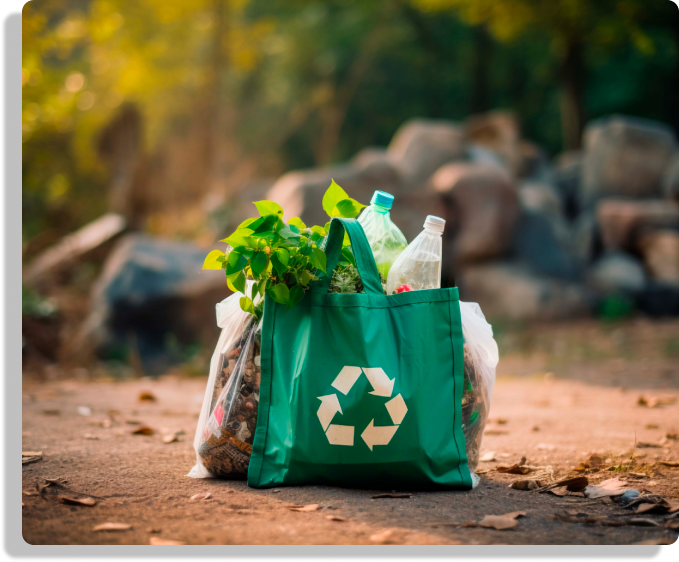

SOBRE NOSSO PROJETO
Nosso projeto visa educar, conscientizar e incentivar
a reciclagem em no mundo. Aqui estão alguns
aspectos-chave do nosso projeto:

Campanhas de Conscientização
Divulgamos organizações que fazem eventos, palestras e workshops para informar as pessoas sobre a importância da reciclagem. Queremos inspirar mudanças de comportamento e mostrar como pequenas escolhas diárias podem contribuir para um planeta mais saudável.
Parcerias com Empresas Locais
Divulgamos empresas locais para estabelecer pontos de coleta de materiais recicláveis. Essas parcerias nos permitem ampliar nosso alcance e facilitar o processo de reciclagm para todos.
UNIP-APS@2024
CIÊNCIA DA COMPUTAÇÃO | 1ºSEMESTRE